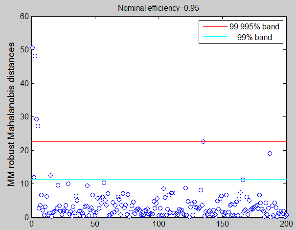
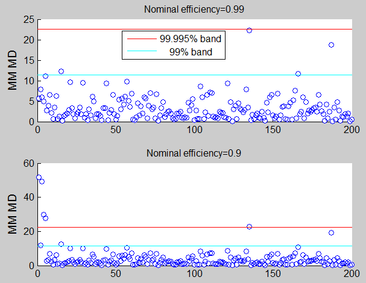

| Forward Search Data Analysis Toolbox™ |
|
| Provide feedback on FSDA toolbox |
MM estimators in multivariate analysis (using starting values provided by the user)
[out] = MMmultcore(Y,loc0,shape0,auxscale)
[out] = MMmultcore(Y,loc0,shape0,auxscale,param1,val1,param2,val2,...)
[out] = MMmultcore(Y,loc0,shape0,auxscale) computes MM estimators in multivariate analysis using starting values specified by the user. The default nominal efficiency which is used is 95%.
Y is the n-by-v matrix which contains (in the columns) the values of v variables. loc0 is a Vector containing initial estimate of location (generally an S estimate with high breakdown point (eg 0.5), shape0 is a v x v matrix containing initial estimate of shape (generally an S estimate with high breakdown point (eg 0.5) and auxscale is scalar containing estimate of the scale (generally an S estimate with high breakdown point
[out] = MMmultcore(Y,loc0,shape0,auxscale) returns the following information
loc − 1-by-v vector with MM estimate of location.
shape − v x v matrix with MM estimate of the shape matrix
cov − v x v matrix with MM estimate of the covariance matrix
weights − n-by-1 Boolean vector containing weights for each observations. The elements of this vector lie in the interval 0 or 1. Elements close to 0 values are associated with the outliers.
md − n x 1 vector containing the estimates of the robust Mahalanobis distances (in squared units).
outliers − vector containing the list of the units declared as outliers using confidence level specified in input scalar conflev
conflev − confidence level which is used to declare outliers. Remark: scalar out.conflev will be used to draw the horizontal lines (confidence bands) in the plots
Y − Data matrix Y. The field is present if option ysave is set to 1.
class − string containing 'MM'
[out] = MMmultcore(Y,loc0,shape0,auxscale,param1,val1,param2,val2,...) specifies one or more of the name/value pairs described in the following table.
| Parameter | Value |
|---|---|
| 'eff' |
scalar defining nominal efficiency (i.e. a number between |
| 'effshape' | dummy scalar. If effshape=1 efficiency refers to shape efficiency else (default) efficiency refers to location. |
| 'refsteps' |
scalar defining maximum number of iterations in the MM loop. Default value is 100 |
| 'reftol' |
scalar controlling tolerance in the MM loop. Default value is 1e-7 |
| 'conflev' |
Scalar between 0 and 1 containing confidence level which is used to declare units as outliers. Usually 0.95, 0.975, 0.99 (individual alpha) or 1-0.05/n, 1-0.025/n, 1-0.01/n (simultaneous alpha). Default value is 0.975 |
| 'plots' |
Scalar. If plots=1 a plot with robust Mahalanobis distances is produced else (default) no plot is produced. |
| 'nocheck' |
Scalar. If nocheck=1 no check is performed on matrix Y. As default nocheck=0. |
| 'ysave' |
scalar that is set to 1 to request that the data matrix Y is saved into the output structure out. Default is 0, i.e. no saving is done. |
In these examples we use the same data which have been used in the help of function FSM in order to compare the output of different procedures.
state=100;
randn('state', state);
n=200;
v=3;
Y=randn(n,v);
Ycont=Y;
Ycont(1:5,:)=Ycont(1:5,:)+3;
For outlier detection we consider both the nominal individual 1% significance level and the simultaneous Bonferroni confidence level.
% Define nominal confidence level conflev=[0.99,1-0.01/n]; % Define number of subsets nsamp=3000; % Define the main title of the plots titl=''; % S estimators [outS]=Smult(Ycont,'nsamp',nsamp,'conflev',conflev(1)); eff=0.95; outMM=MMmultcore(Ycont,outS.loc,outS.shape,outS.scale,'eff',eff) titl=['Nominal efficiency=' num2str(eff)]; laby='MM robust Mahalanobis distances'; malindexplot(outMM.md,v,'title',titl,'laby',laby,'numlab','','conflev',conflev)

The purpose of the code below is to analyze how the residuals change if we use a different level of nominal efficiency.
eff=0.99; outMM=MMmultcore(Y,outS.loc,outS.shape,outS.scale,'eff',eff) laby='MM MD'; h1=subplot(2,1,1); titl=['Nominal efficiency=' num2str(eff)]; malindexplot(outMM.md,v,'h',h1,'title',titl,'laby',laby,'numlab','','conflev',conflev) eff=0.9; outMM=MMmultcore(Ycont,outS.loc,outS.shape,outS.scale,'eff',eff) laby='MM MD'; h2=subplot(2,1,2); titl=['Nominal efficiency=' num2str(eff)]; malindexplot(outMM.md,v,'h',h2,'title',titl,'laby',laby,'numlab','','conflev',conflev)

| Provide feedback on FSDA toolbox |
|
|
mmmult.html | mmreg.html |
|